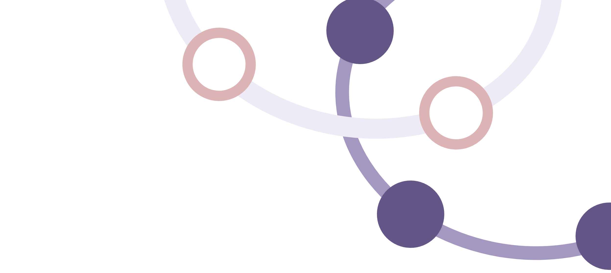
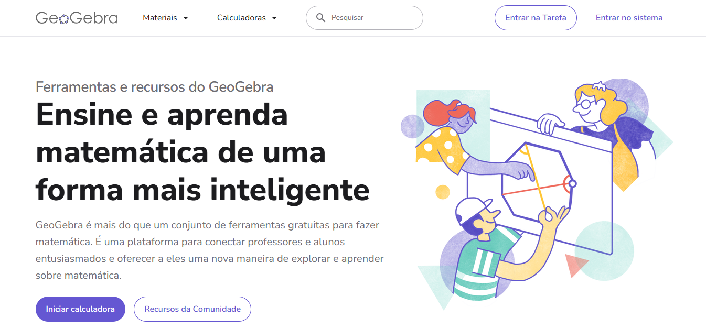
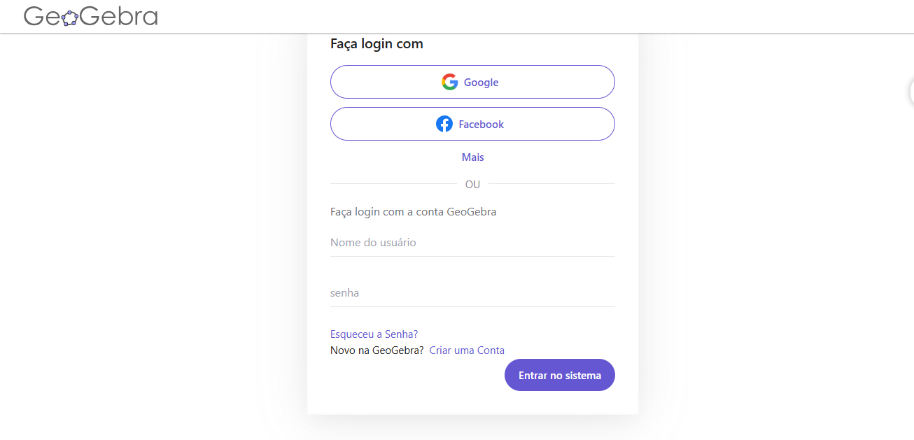
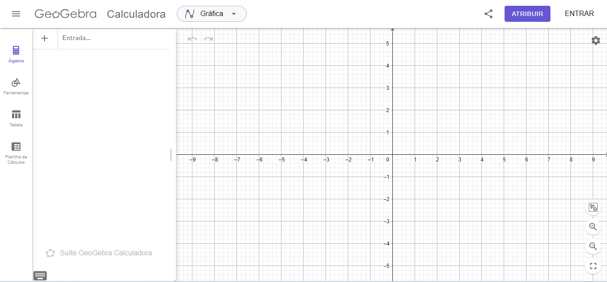
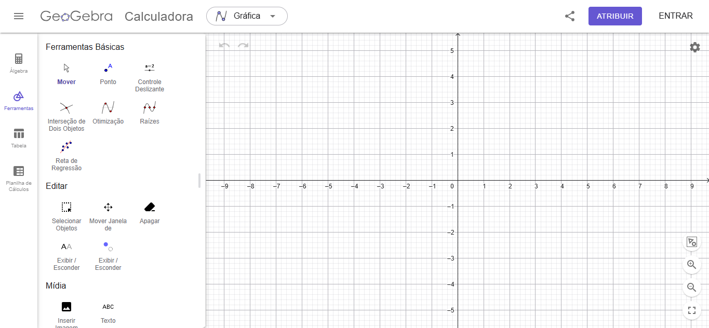
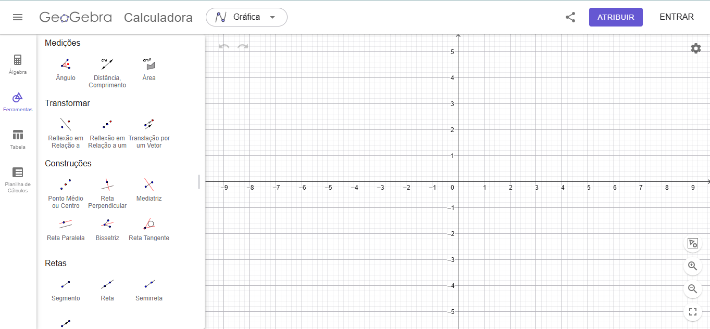
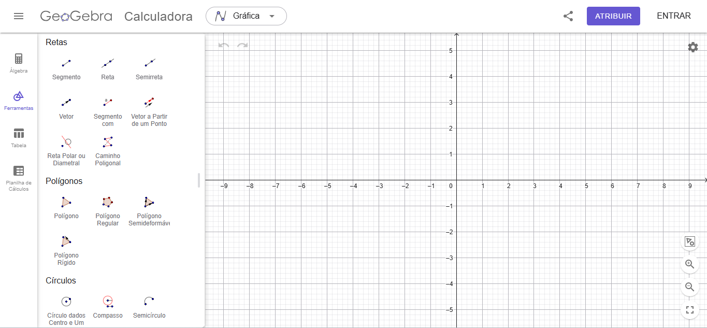
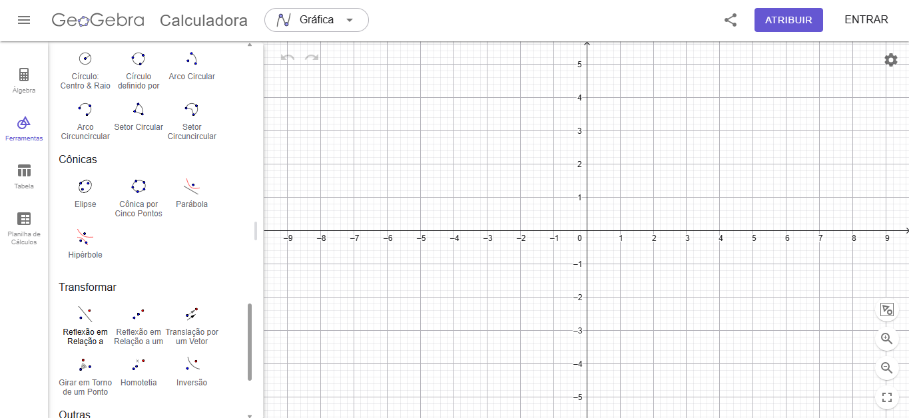

Funções
Trigonométricas
com GeoGebra
Um guia para estudos
e aprendizagem em EaD
Este livreto foi elaborado para apoiar o estudo de funções trigonométricas em contextos de Educação a Distância (EaD), com o uso do software GeoGebra como ferramenta de exploração matemática. O material foi pensado para disciplinas de cursos como os da UNIVESP, podendo ser utilizado tanto por estudantes, de forma autônoma, quanto por professores, como apoio à condução das aulas. As atividades propostas buscam favorecer a compreensão dos conceitos por meio da visualização, da experimentação e da interação com o software, características essenciais em ambientes de aprendizagem EaD. Este material constitui um produto educacional derivado do artigo desenvolvido no âmbito deste trabalho de conclusão de curso. Para uma compreensão mais aprofundada dos fundamentos teóricos, das escolhas metodológicas e das análises realizadas, recomenda-se a leitura do artigo completo, disponível em:
Aula 1
Conhecendo o GeoGebra
1.1 Objetivo da aula
Familiarizar-se com a interface do GeoGebra e suas principais ferramentas, desenvolvendo autonomia para utilizar o software nas atividades propostas neste material.
1.2 Primeiro contato com o GeoGebra
Acesse o site do GeoGebra em: https://www.geogebra.org/
Ao acessar a plataforma, você encontrará a página inicial ilustrada na Figura 1.

Observe
Para salvar suas construções, é necessário criar uma conta no GeoGebra.
Atividade
Crie uma conta no GeoGebra Online:
- clique em Entrar no sistema, na parte superior direita da tela;
- faça login utilizando uma conta do Google ou Facebook, ou selecione a opção Criar conta, conforme ilustrado na Figura 2;
- após o login, clique novamente em Entrar no sistema.
Observe
Esse é o ambiente onde você poderá salvar suas construções ao longo das atividades.

Observe
Na página inicial, localize o botão Iniciar calculadora. Esse será o principal ponto de acesso ao ambiente de construção.
Para o professor
Neste momento, é importante permitir que o estudante explore livremente a página inicial, identificando menus e opções disponíveis.
1.3 Acessando a calculadora gráfica
Clique em Iniciar calculadora. A interface apresentada será semelhante à mostrada na Figura 3.
Observe
Observe a organização da tela. Identifique o plano cartesiano, o campo de entrada e o menu lateral.

1.4 Explorando a interface
A interface do GeoGebra é composta por diferentes elementos que permitem construir e visualizar objetos matemáticos:
1. Plano cartesiano
A região central da tela corresponde ao plano cartesiano, onde serão exibidos gráficos, pontos e construções geométricas.
2. Campo de entrada
O campo de entrada permite digitar funções e comandos matemáticos.
3. Painel algébrico
Apresenta os objetos criados e suas representações matemáticas.
4. Menu lateral
Permite acessar ferramentas, tabelas e outros recursos.
Atividade
Realize as seguintes ações:
- mova o plano cartesiano com o mouse;
- utilize o zoom para aproximar e afastar a visualização;
- observe o comportamento dos eixos.
Observe
Ao utilizar o zoom, observe se os eixos mudam de posição ou apenas a escala da visualização é alterada.
1.5 Salvando sua construção
Atividade
Salve a construção realizada no GeoGebra:
- clique em Menu (ícone no canto superior esquerdo);
- selecione a opção Salvar online;
- digite um nome para a sua construção;
- caso ainda não tenha feito login, será solicitado que você entre em sua conta.
Observe
Sua construção será armazenada na sua conta do GeoGebra, permitindo acessá-la posteriormente de qualquer dispositivo.
1.6 Explorando as ferramentas
Clique na opção Ferramentas. Você verá diferentes recursos organizados.
Ferramentas básicas
As ferramentas apresentadas na Figura 4 são as mais utilizadas nas construções iniciais.

- Mover: permite arrastar objetos no plano;
- Ponto: cria pontos no plano cartesiano;
- Controle deslizante: permite criar valores variáveis;
- Interseção: identifica pontos comuns entre objetos;
- Raízes: determina zeros de funções.
Atividade
Selecione a ferramenta Ponto e clique em três posições diferentes no plano cartesiano. Em seguida, utilize a ferramenta Mover para deslocar esses pontos.
Observe
Perceba que os pontos podem ser movimentados. Essa característica mostra que o GeoGebra é um software dinâmico.
Ferramentas de medição e transformação
As ferramentas mostradas na Figura 5 permitem medir objetos e realizar transformações geométricas.

- Ângulo: cria ângulos entre segmentos ou retas;
- Distância ou comprimento: realiza medidas lineares;
- Área: determina a área de regiões;
- Reflexão: permite refletir objetos;
- Translação: desloca objetos no plano.
Observe
Essas ferramentas são importantes para analisar propriedades geométricas e verificar relações entre medidas.
Ferramentas de construção geométrica
As ferramentas da Figura 6 permitem construir objetos com propriedades específicas.
- Reta perpendicular: constrói retas com ângulo de 90º;
- Reta paralela: cria retas paralelas;
- Bissetriz: cria as bissetrizes de um ângulo;
- Mediatriz: cria a mediatriz de um segmento: reta perpendicular que divide um segmento em dois segmentos congruentes;
- Reta tangente: constrói retas tangentes a curvas.
Observe
Essas ferramentas garantem maior precisão nas construções geométricas.

Ferramentas adicionais
As ferramentas apresentadas na Figura 7 ampliam as possibilidades de construção no GeoGebra.

- Circunferência e arcos: permitem construir círculos e suas partes;
- Cônicas: possibilitam criar elipses, parábolas e hipérboles;
- Transformações: incluem rotações, ampliações e reduções.
Observe
Embora nem todas essas ferramentas sejam utilizadas neste momento, elas serão exploradas ao longo do material.
Para o professor
Incentive os estudantes a testarem diferentes ferramentas, mesmo sem domínio completo, para estimular a familiarização com o ambiente.
1.7 Utilizando o campo de entrada
Digite no campo de entrada:
\[ f(x) = x^2 \]
Pressione Enter.
Observe
Observe que o gráfico é gerado automaticamente no plano cartesiano.
Agora digite:
\[ g(x) = \sen(x) \]
Atividade
Compare os dois gráficos exibidos na tela.
Observe
Observe que a parábola associada à função \( x^2 \) não apresenta um padrão que se repete ao longo do eixo \( x \). Já o gráfico da função \( \sen(x) \) repete continuamente a mesma forma, característica conhecida como periodicidade.
Atividade
- Que diferenças você percebe entre o comportamento da função \( f(x) = x^2 \) e da função \( g(x) = \sen(x) \)?
- O que significa dizer que o gráfico de \( \sen(x) \) é periódico?
- O que parece se repetir nesse gráfico?
- É possível prever o comportamento futuro de cada gráfico apenas observando uma parte dele? Justifique sua resposta.
- Você conhece algum fenômeno do cotidiano que possa ser representado por um comportamento periódico?
Para o professor
Incentive os estudantes a testarem diferentes ferramentas, mesmo sem domínio completo, para estimular a familiarização com o ambiente.
1.8 Síntese da aula
Nesta aula, você:
- conheceu a interface do GeoGebra;
- explorou ferramentas básicas;
- utilizou o campo de entrada;
- observou gráficos de funções.
Observe
A familiarização com o GeoGebra é essencial para o desenvolvimento das próximas atividades, especialmente no estudo das funções trigonométricas.